Thelio Astra (Parts & Repairs)
Many components in your Thelio Astra can be upgraded or replaced as necessary. This page uses photos of the the A1-N1 revision, which indicates:
- A1: The first Ampere-compatible motherboard used in Thelio Astra (
ALTRAD8UD2-1L2Q).- Units marked A1.1 include the
ALTRAD8UD-1L2Tmotherboard instead.
- Units marked A1.1 include the
- N1: The first chassis revision of the Thelio Astra.
- The Thelio Astra chassis is based on the nebula40 chassis (revision 3), but lacks top I/O and 2.5" drive mounts.
Minor case details may vary based on the production date of the unit, but screw counts, general component locations, and other details should remain the same unless otherwise noted.
Power the machine off, switch off the power supply, and unplug all peripherals before working with any internal components. Then, follow these step-by-step guides for instructions:
- Replacing the front accent strip
- Removing the top case
- Removing the side brace
- Replacing the bottom case fan
- Removing the CPU duct
- Replacing the RAM
- Replacing the GPU
- Replacing the CMOS battery
- Replacing the M.2 drives
- Replacing the CPU fans
- Replacing the CPU cooler/thermal paste and CPU
- Replacing the power supply
- Replacing the Thelio Io board
- Troubleshooting the power button
Replacing the front accent strip:
Thelio Astra includes a customizable accent panel on the front of the case, which can be swapped to change the case's look and feel. The instructions for swapping the accent are also available in video form.
Tools required: None
Time estimate: 30 seconds
Difficulty: Easy ●
Steps to replace the front accent strip:
- Place the Thelio on the edge of the desk so the front side is hanging off of the desk.
- The Thelio can alternatively be lifted or tilted so the front of the computer is hovering above the desk.
- Slide the accent strip down to unlock it.
- The accent can be gripped at the bottom edge.
- Pull the accent strip off of the case, starting with the bottom edge.
- Place the new accent strip onto the front of the case and slide it up to lock it into place.

Removing the top case:
The top case can be removed to access the internal components.
Tools required: Cross-head (Phillips) screwdriver (optional)
Time estimate: 2 minutes
Difficulty: Easy ●
Steps to remove the top case:
- Remove the four outer screws holding the top case onto the machine.

- Slide the top case up and off of the machine.
Removing the side brace:
The side brace provides a mounting point for the GPU brace fingers, which help keep GPUs or other PCI Express cards in place during shipping. It also provides mounting points for up to two 120mm fans; one 120mm fan is offered as an optional add-on during factory configuration.
The GPU brace fingers are only required during shipping. The system can be run without this part if it does not fit an upgraded GPU.
Part numbers:
- The optional side fan is a 120mm Be Quiet! Silent Wings 4.
- Model number:
BQ SIW4-12025-MF-PWM
- Model number:
Tools required: Cross-head (Phillips) screwdriver
Time estimate: 15 minutes
Difficulty: Easy ●
Steps to remove the side brace:
- Follow the steps above to remove the top case.
- Unscrew the four screws holding the side bracket in place (two on the front of the case, two on the back).
- Take note of which screw holes the side brace is screwed into, which varies by GPU. In the below photos, the innermost set of screw holes is used.

- Pull the side brace out of the chassis. Unplug the side fan connector from the splitter board on the right side, if connected.
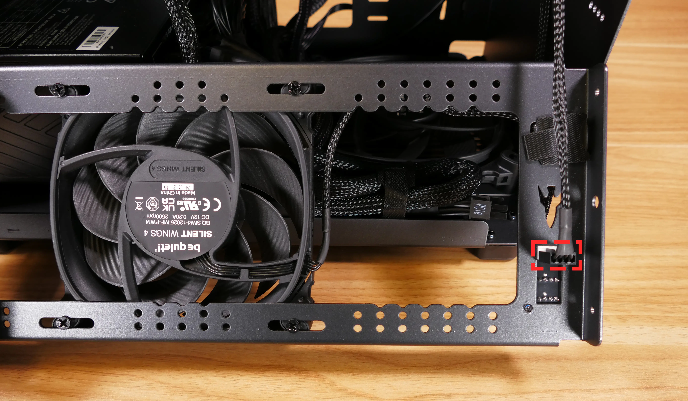
Steps to adjust the GPU brace fingers:
- Follow the steps above to remove the top case and remove the side brace.
- To adjust the GPU brace fingers' horizontal position, unscrew the four corner screws (highlighted green below), move the GPU brace fingers' mounting bar, and reattach it in the desired position.
- If any vertical alignment screws overlap the side brace, they will also need to be removed.
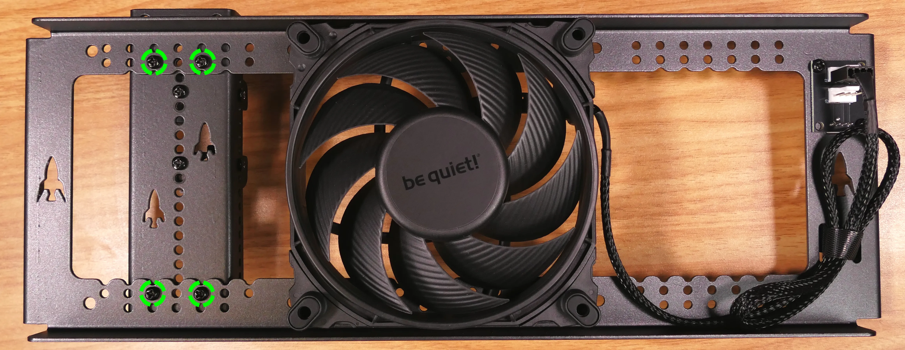
- To adjust a GPU brace finger's vertical position, unscrew the three vertical adjustment screws (per finger), move the GPU brace finger, and reattach it in the desired position.

Steps to replace the side GPU fan:
- Follow the steps above to remove the top case and remove the side brace.
- Unplug the GPU fan from the splitter board on the side brace and free its cable from the velcro strap.

- Remove the four screws holding the side GPU fan in place.

- Screw the new fan into the side brace, plug it into the splitter board, and secure its cable with the velcro strap.
Replacing the bottom case fan:
Thelio Astra A1-N1 has one case-mounted intake fan on the bottom of the chassis.
Part numbers:
- The bottom case fan is a 140mm Be Quiet! Silent Wings 4.
- Model number:
BQ SIW4-14025-MF-PWM
- Model number:
Tools required: Cross-head (Phillips) screwdriver
Time estimate: 20 minutes
Difficulty: Medium ●
Steps to replace the bottom case fan:
- Follow the steps above to remove the top case.
- The side brace can optionally be removed to provide easier access to the fan and its cabling.
- Unplug the fan's cable from the Thelio Io daughterboard.
- The bottom case fan plugs into the
INTAKE FAN/FANOUT2port on the Thelio Io board. - When viewed from the access cutout on the front of the case, this connector is the lowest one with a white receptacle.
- The bottom case fan plugs into the
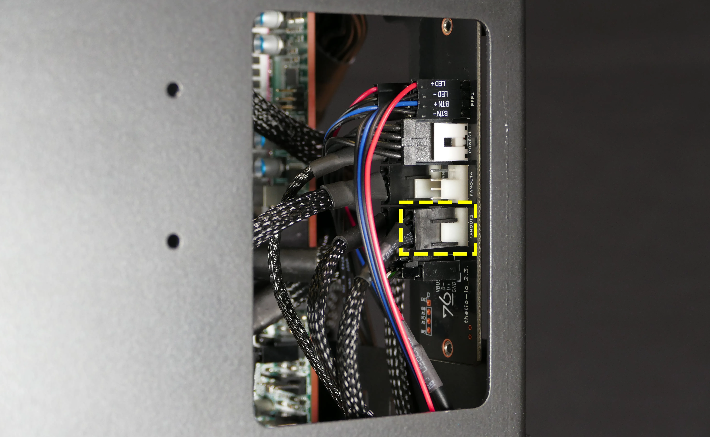
- Unscrew the four fan screws from the bottom of the machine.
- To avoid damaging other components, place the machine on its front side when working with the bottom surface.
- A soft surface such as a towel can optionally be used to protect the work surface and the machine.

- Remove the old fan from the case.
- When installing the fan, mount the components in the following order:
- Chassis
- Dust filter
- Acrylic spacer
- Fan
- The new fan's cable should be oriented towards the front-right corner of the case.
- The cable runs along the inner corner of the case, passing through the velcro strap closest to the Thelio Io board.

Removing the CPU duct:
The CPU duct guides airflow through the CPU cooler. It covers the CPU and partially obstructs the RAM slots and top PCIe slot.
Tools required: Cross-head (Phillips) screwdriver
Time estimate: 7 minutes
Difficulty: Easy ●
Steps to remove the CPU duct:
- Follow the steps above to remove the top case.
- Unplug the braided fan connector (highlighted red below) from the top splitter board in the front corner of the machine.
- The splitter board provides the same signal to both ports, so it doesn't matter which port each cable is plugged into. In the below photo, the braided cable is plugged into the top port (
J2).
- The splitter board provides the same signal to both ports, so it doesn't matter which port each cable is plugged into. In the below photo, the braided cable is plugged into the top port (

- Unscrew the four back screws and two top crossbar screws holding the CPU duct in place.
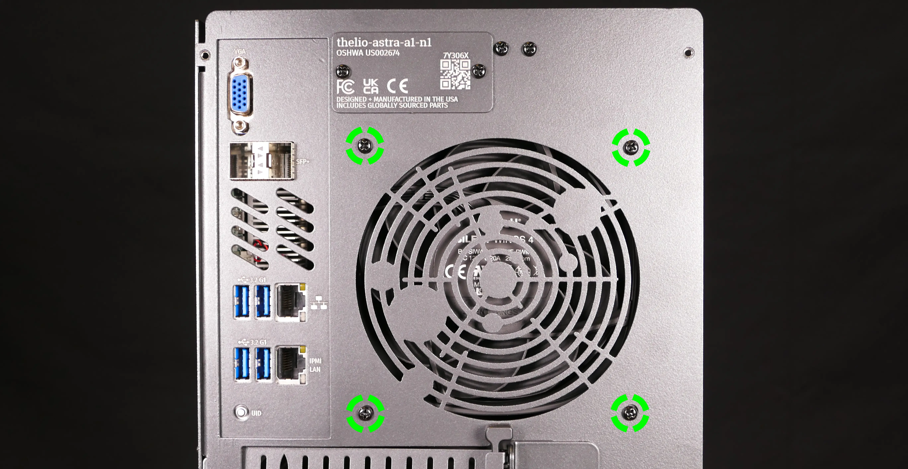

- Pull the CPU duct away from the machine.
Replacing the RAM:
Thelio Astra A1-N1 supports up to 512GB (8x64GB) of RAM. The RAM sticks are ECC DDR4 RDIMMs/LRDIMMs running at a speed of 3200 MHz.
If you've purchased new RAM, need to replace your RAM, or are reseating your RAM, follow these steps.
Tools required: Cross-head (Phillips) screwdriver
Time estimate: 15 minutes
Difficulty: Medium ●
Steps to replace the RAM:
- Follow the steps above to remove the top case and remove the CPU duct.
- Removing the CPU cooler is not physically required, but can optionally be done for easier access to the inner RAM slots. Replacing the thermal paste is strongly recommended if the CPU cooler is removed. In the below photo, the CPU cooler has been removed for greater visibility.
- If installing/removing RAM in any of the top RAM slots, unplug the 8-pin CPU power cable (labeled
ATX12V1to the right of the port), highlighted red below.
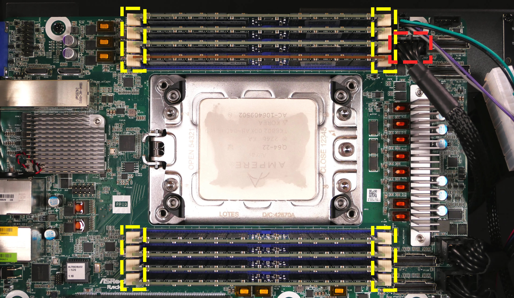
- To remove an existing RAM stick, flip the left and right latches away from the stick, then pull the stick out of the slot.
- Make sure the tabs on the left and right of the slot are open (pulled away from the slot), then insert the new RAM (or re-seat the existing RAM) into the slot.
- The RAM stick will only fit in one direction. The larger group of pins goes on the left.
- Use the following guide for placement of the RAM sticks:

- Replace the CPU cooler (if necessary), CPU duct, and top case.
Replacing the GPU:
Thelio Astra ships with one dedicated GPU in the PCIe 4.0 x16 slot third from the top. GPUs greater than one slot tall will obstruct the lowest PCIe slot.
Depending on your motherboard and firmware version, the boot splash screen may not show up if the GPU is installed in either of the top two PCIe slots. For this reason, and for optimal thermal efficiency, it's recommended to reserve the top two slots for non-GPU PCIe accessories.
Tools required: Cross-head (Phillips) screwdriver
Time estimate: 15 minutes
Difficulty: Medium ●
Steps to replace the GPU:
- Follow the steps above to remove the top case and remove the side brace.
- If you're removing a GPU, unplug the GPU power cable from the right side of the card. Hold down the latch on the connector while unplugging the cable.
- Thelio Astra includes both classic 6+2-pin and 12VHPWR 16-pin GPU power cables. If you're changing GPUs and switching from one type of cable to the other, you may need to free the new cable from the velcro straps at the bottom of the chassis, then secure the old cable out of the way using the velcro straps.

- Unscrew the two back screws holding the PCIe bracket in place, and remove the PCIe bracket (or slide it into the rightmost position).
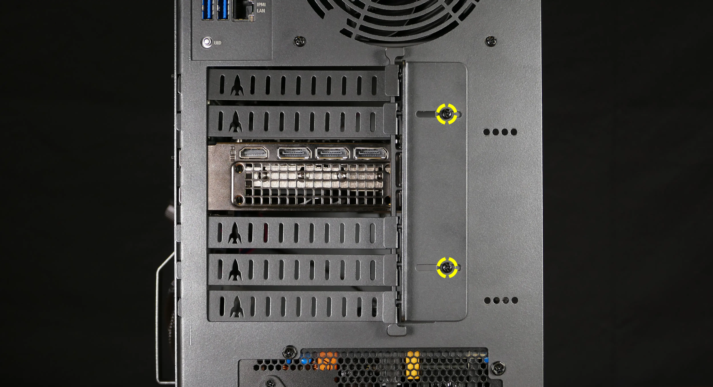
- Pull the card out of the slot.
- There are no latches on the PCIe slots of the Thelio Astra motherboards.

- After inserting the new GPU into its slot, connect the power cable.
- Once the GPU is installed, replace the back PCIe bracket, side brace, and top case.
- The GPU brace finger may need to be adjusted before the side brace can be reinstalled.
Replacing the CMOS battery:
The CMOS battery supplies power to the system's CMOS chip. UEFI settings and the computer's hardware clock are stored on the CMOS. If your system doesn't boot, you can reset the CMOS to force a low-level hardware reset. If your clock is constantly resetting, it's likely your CMOS battery needs to be replaced.
Warning (ingestion hazard): Keep batteries out of reach of children. Death or serious injury can occur if ingested. If a battery is suspected to be swallowed or inserted inside any part of the body, seek immediate medical attention. In the US, you can also call the National Battery Ingestion Hotline for guidance: 1 (800) 498-8666
Part numbers:
- The CMOS battery is a standard CR2032 battery. The stock battery is Toshiba brand.
Tools required: Cross-head (Phillips) screwdriver
Time estimate: 20 minutes
Difficulty: Medium ●
Steps to replace the CMOS battery (ALTRAD8UD2-1L2Q motherboard variant):
- Follow the steps above to remove the top case, remove the CPU duct, and remove the side brace.
- Depending on the size of your GPU, you may also need to remove the GPU to access the Clear CMOS Pad.
- Unplug the CMOS battery connector (highlighted cyan below) from the header next to the silver heatsink at the top left of the motherboard.
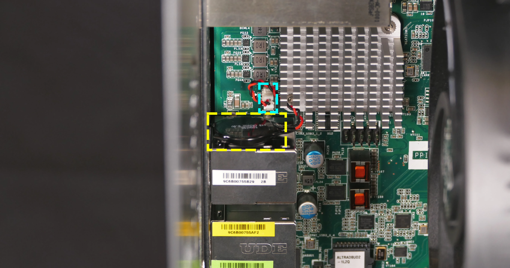
- If you are replacing the CMOS battery, pull it away from the Ethernet port casing.
- To reset the CMOS, bridge the contacts of the Clear CMOS Pad near the bottom-right corner of the motherboard (near the M.2 SSD).

- Plug in the new CMOS battery (or re-connect the existing CMOS battery) and adhere it to the top of the Ethernet port casing.
- Replace the GPU, side brace, and top case.
Replacing the M.2 drives:
Thelio Astra A1-N1 has one or two M.2 storage slots on the motherboard, depending on the motherboard variant:
- The ALTRAD8UD-1L2T motherboard variant includes two M.2 slots.
- The ALTRAD8UD2-1L2Q motherboard variant (shown in the photos on this page) includes one M.2 slot.
All motherboard slots are M-key and support sizes 2280 and 2230.
Factory configurations offer up to four additional SSDs using a PCIe adapter card, not pictured in this manual.
Tools required: Cross-head (Phillips) screwdriver
Time estimate: 30 minutes
Difficulty: Medium ●
Steps to replace the M.2 drive:
- Follow the steps above to remove the top case, remove the side brace, and remove the GPU.
- Removing the GPU is optional to access the top slot (the only slot in the ALTRAD8UD2-1L2Q motherboard vairant), but still recommended for ease of access.
- Unscrew and remove the plastic-headed screw holding the M.2 drive in place.
- The M.2 drive will pop up at an angle and can be removed.

- To install a drive, insert it into the slot at an angle, then hold it against the motherboard while screwing in the plastic-headed screw.
- Replace the GPU, side brace, and top case as applicable.
Replacing the CPU fans:
Thelio Astra A1-N1 contains three 120mm CPU fans. One fan is mounted in the back of the CPU duct, while two others are mounted on the front and back of the CPU cooler's heatsink.
Part numbers:
- The duct-mounted CPU fan is a Be Quiet! Silent Wings 4 (BQ SIW4-12025-MF-PWM).
- The heatsink-mounted CPU fans are Arctic Freezer 4U fans.
- The heatsink-mounted fans are produced for the Arctic Freezer 4U-M Ampere CPU cooler, and it may not be possible to source them separately.
Tools required: Cross-head (Phillips) screwdriver
Time estimate: 25 minutes
Difficulty: Medium ●
Steps to replace the duct-mounted CPU fan:
- Follow the steps above to remove the top case and remove the CPU duct.
- Unscrew the four screws (two on each side) holding the fan bracket onto the duct.
- Removing the bracket from the duct is not required, but it makes removal and installation of the fan much easier.
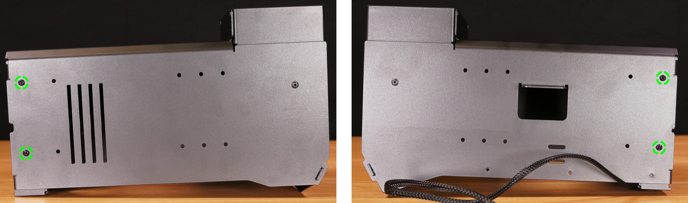
- Unscrew the four screws attaching the bracket to the fan.
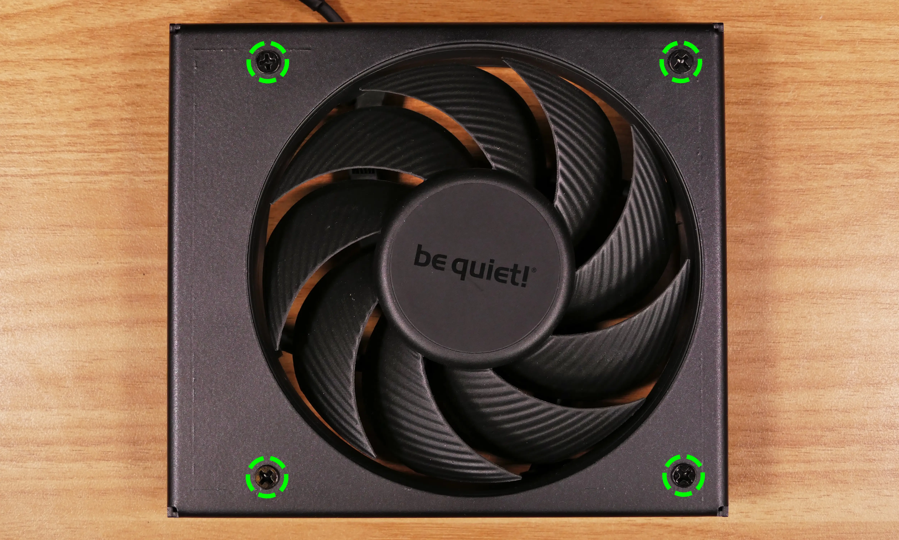
- When reinstalling the fan into the CPU duct:
- The spinning side should face inward (towards the front of the chassis), while the stationary label should face outward (towards the back of the chassis).
- The cable should point towards the fan connector (towards the top left, when viewed from the back).
- The fan bracket contains a cable channel in the corresponding corner.
- Overtightening the fan bracket's screws may cause fan noise; if the fan is creating excessive noise, try slightly loosening some of the screws.
Steps to replace the heatsink-mounted CPU fans:
- Follow the steps above to remove the top case and remove the CPU duct.
- You can optionally remove the side brace for easier access.
- Disconnect the rear cooler fan from the front cooler fan's Y-cable, and unplug the front cooler fan's Y-cable from the splitter board (if it wasn't already unplugged while removing the CPU duct).
- The heatsink fan cable connection points are highlighted red below.
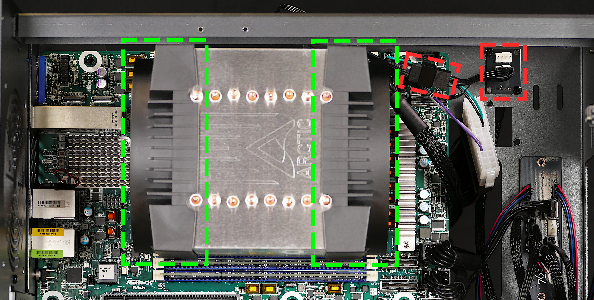
- Pull the fans (highlighted green above) directly out of the case, sliding them off the heatsink.

- When reinstalling the CPU heatsink fans, the fan with a normal cable goes on the back of the heatsink, while the fan with a Y-cable goes on the front.
Replacing the CPU cooler and CPU:
The CPU cooler dissipates heat from the CPU to the heatsink, where the CPU fans expel it from the system. Depending on your climate and the age of the machine, replacing the thermal paste between the CPU and the cooler/heatsink may help the system run cooler.
Part numbers:
- The CPU cooler is an Arctic Freezer 4U-M.
- The CPU uses an LGA 4926 socket.
Tools required: Cross-head (Phillips) screwdriver, six-point star (Torx T20) screwdriver, thermal paste
Time estimate: 45 minutes
Difficulty: High ●
Steps to remove the CPU cooler/thermal paste:
- Follow the steps above to remove the top case, remove the side brace, remove the CPU duct, remove the GPU, and remove the heatsink-mounted CPU fans.
- While holding the CPU cooler in place so it doesn't fall, loosen the screws to the left and right of the CPU cooler.
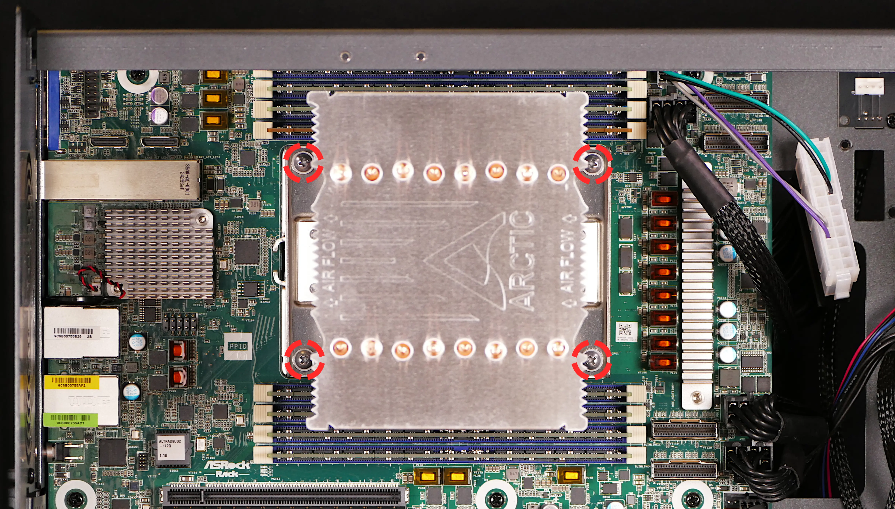
- Lower the cooler away from the CPU.
- Using a paper towel, clean the existing thermal paste off of the heatsink and CPU.
- Due to the design of the heatsink, some thermal paste may remain between the heatsink pipes. Only the flat section of the pipes that makes contact with the CPU needs to be cleaned.
- You may also use a small amount of rubbing alcohol if the old paste is dried or difficult to remove.

Steps to replace the CPU:
- Place the computer on its side so the motherboard is facing up.
- Using a Torx T20 screwdriver, unscrew the Torx screws in reverse order of the stamped numbers (unscrewing #1 last).
- Your motherboard may have four or five Torx screws on the CPU socket, depending on the revision.
- The screws are held captive and will not come apart from the CPU holder.

- The spring-loaded CPU holder will raise off of the motherboard.

- Carefully lift the CPU's black plastic frame out of the CPU socket.
- Be careful not to bend any of the gold pins on the CPU socket, and do not touch the gold pads on the CPU.

- Gently place the new CPU into the socket.
- The diagonal-cut corner of the CPU (marked with a triangle on the bottom) should be oriented to match the triangle on the CPU socket, pointing towards the bottom right of the motherboard.
- Flip the CPU cover back onto the CPU.
- Screw in the CPU cover's Torx screws in the order of the stamped numbers (starting with #1).
Steps to install the thermal paste/CPU cooler:
- Draw an
Xshape of thermal paste onto the CPU.
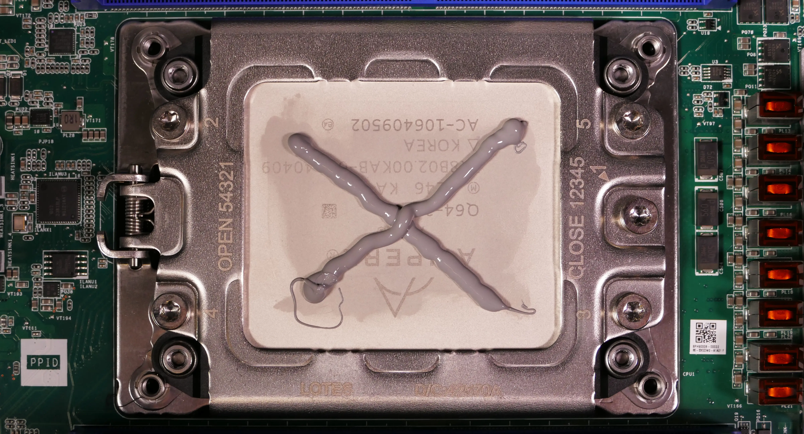
- Place the CPU cooler onto the CPU; while holding it in place, screw in its four mounting screws.
- The cooler should be oriented so the Arctic logo faces the right side.
- Insert each screw partially, then finish tightening them all.
- Set the computer upright, then reinstall the cooler-mounted CPU fans, CPU duct, GPU, side brace, and top case.
Replacing the power supply:
The power supply unit (PSU) can be replaced with another unit of the same model.
Part numbers:
- The default PSU is the XPG Core Reactor II.
Tools required: Cross-head (Phillips) screwdriver
Time estimate: 45 minutes
Difficulty: Medium ●
Steps to replace the power supply:
- Follow the steps above to remove the top case, remove the side brace, and unplug the GPU (if installed).
- Unscrew the power supply bracket's left side from the bottom of the chassis.
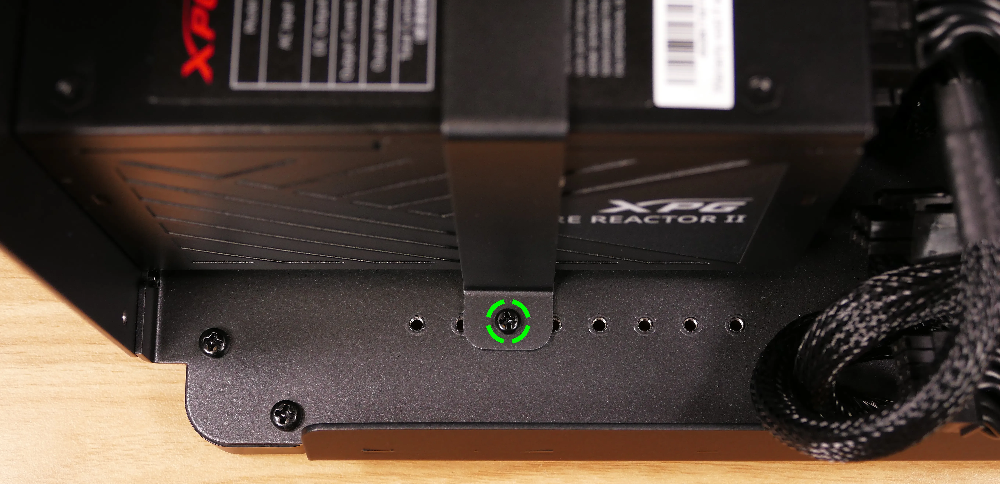
- Unscrew and remove the chassis spacer bracket on the right side of the chassis, then unscrew the power supply bracket's right side from the chassis.
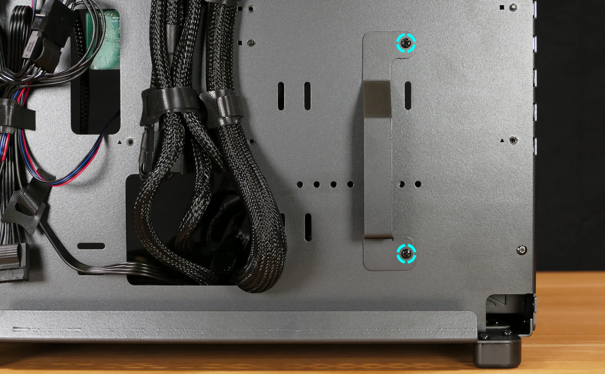 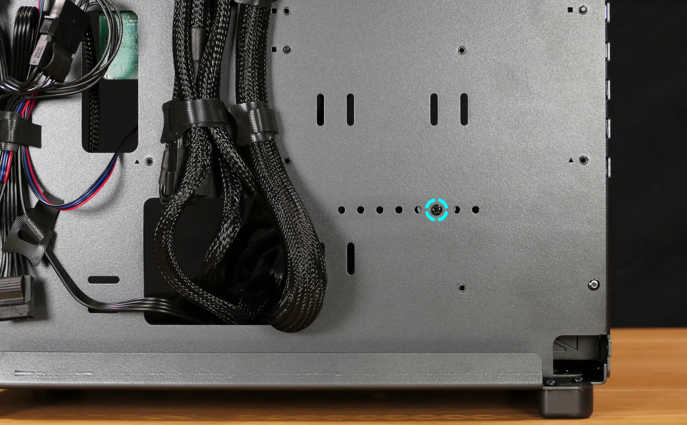
- Unscrew the power supply's four screws from the back of the chassis.
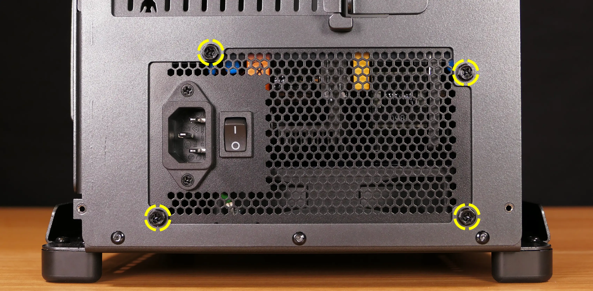
- Unplug all of the modular cabling from the back of the PSU.
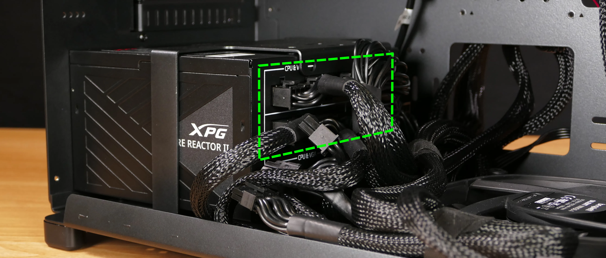
- Remove/replace the power supply.
- The replacement PSU should be installed with the fan facing the bottom of the case.
- Place the PSU on the rubber post and hold it against the screwholes in the back of the case while attaching it.
- Connect the power cables to the new power supply and GPU, then reinstall the PSU brace, side brace, and top case.
Replacing the Thelio Io board:
Named after Jupiter's moon Io, the Thelio Io daughterboard handles the front power button and fan control. If the Thelio Io board becomes defective, it can be replaced using the instructions below.
Part numbers:
- Thelio Astra A1-N1 uses Thelio Io version 2 (PCB revision thelio_io_2.3).
Tools required: Cross-head (Phillips) screwdriver
Time estimate: 30 minutes
Difficulty: High ●
Steps to replace the Thelio Io board:
- Follow the steps above to remove the top case.
- The CPU duct and side brace can optionally be removed to provide easier access to the cabling.
- Use the cutout on the front of the chassis to unplug all cabling from the Thelio Io board.
- The topmost connector requires pulling the white tab while unplugging.

- Unscrew the two screws holding the daughterboard on from the right side of the chassis.

- Screw in the new Thelio Io board and reconnect the wiring.
Thelio Io wiring guide:
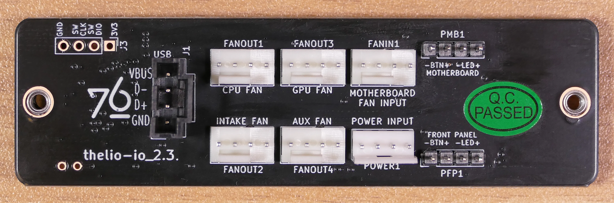
-
When wiring the Thelio Io board, refer to the port labels and the following guide.
FANOUT1/CPU FAN- to the top fan splitter (connecting to the CPU fans).FANOUT4/AUX FAN- disconnected.FANOUT2/INTAKE FAN- to the bottom case fan.FANOUT3/GPU FAN- to the side brace fan splitter.- May be disconnected by default if no side fan is ordered as factory configuration.
FANIN1/MOTHERBOARD FAN INPUT- to theFAN1header on the right side of the motherboard, highlighted cyan below.

POWER1/POWER INPUT- to the power supply via 4-pin Molex connector.- The white plastic clip needs to be held away from the connector to unplug this cable from the Thelio Io board.
PFP1/FRONT PANEL- to the power button receptacle on the front panel.- On the Thelio Io board, the wire color order (from top to bottom) is red, black, blue, black.
- On the power button receptacle, the wire color order (from left to right) is red, black, blue, black.
PMB1/MOTHERBOARD- to the first four pins of thePANEL1header at the bottom right of the motherboard, highlighted green below.- On the Thelio Io board, the wire color order (from top to bottom) is red, black, blue, black.
- On the motherboard, the wire color order (from left to right) is red, black, blue, black.
USB- to theUSB3_3_1header on the bottom edge of the motherboard (via an included USB 2.0 to 3.0 adapter cable), highlighted yellow below.- A small clip needs to be held down to unplug this cable from the Thelio Io board.
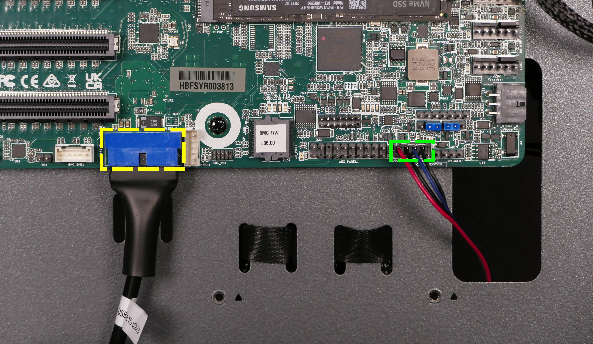
Troubleshooting the power button:
If the front power button doesn't power the machine on or doesn't light up when the system is powered on, try the following troubleshooting steps:
- Ensure the system powers on normally using the internal power button.
- Reseat the front power button to ensure it's making proper contact.
- Check the wiring for the front power button.
- Replace the front power button, if necessary.
Tools required: Cross-head (Phillips) screwdriver (optional)
Time estimate: 20 minutes
Difficulty: Medium ●
Steps to power the machine on using the internal power button:
- Follow the steps above to remove the top case.
- Ensure the system is plugged into power, and the power supply switch is in the 1 (On) position.
- Push the small button labeled
POWERon the Thelio Io board.- The white LED to the left of the button lights up to indicate when the system is powered on (and pulses when the system is suspended).
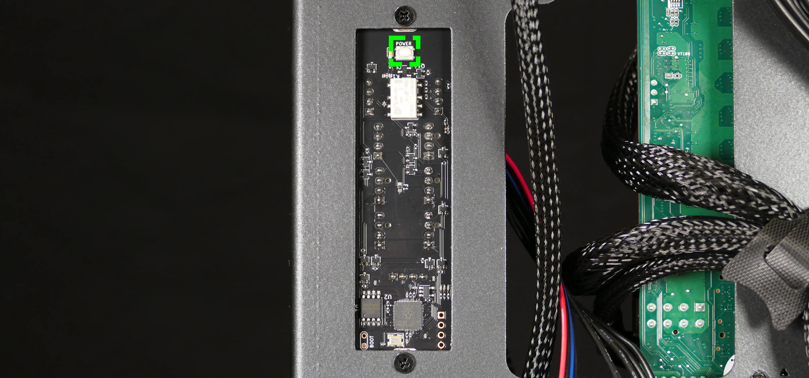
- If the Thelio Io
POWERbutton powers the machine on and the LED lights up, then the issue is either the front power button or its connection to the Thelio Io board. Check the front power button wiring. - If the Thelio Io
POWERbutton and/or LED does not work, then the issue is either the Thelio Io board or its connection to the motherboard. Check the wiring between the Thelio Io board and the motherboard.
Steps to check the front power button wiring:
- Follow the steps above to remove the top case.
- On the back of the power button, the four pins should be connected to the four-wire connector as follows:
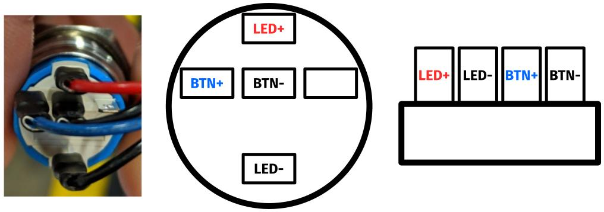
- On the front power button receptacle, the four-pin connector should have the red wire on the left and the black wire on the right (when viewed from the back of the computer.)

- The front power button receptacle should plug into the
PFP1port on the Thelio Io board, with the red wire on the top (see the Thelio Io wiring guide.)
Steps to replace the power button:
- Follow the steps above to remove the top case.
- Follow the instructions in the Replace the Thelio Power Button support article.